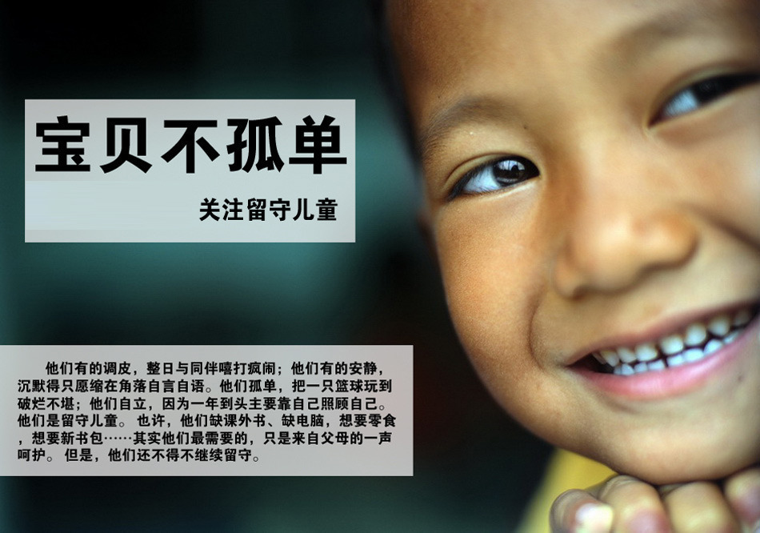

中国留守儿童现状
中国农村留守儿童现象的产生来自于家庭和社会两个方面。一方面，家庭的贫困，使孩子的父母不得不走出农村到城市务工；另一方面，中国长期的城乡二元制以及社会对“农民工”不公平的待遇，使广大农民没有办法及能力带着孩子一起走进城市。
中国留守儿童约5800万人。中国进城务工的农村劳动力约1.3亿人。根据2005年中国1%人口抽样调查的抽样数据推断，中国农村留守儿童约5800万人，其中14周岁以下的农村留守儿童约4000多万人。和2000年相比，2005年的农村留守儿童规模增长十分迅速。在全部农村儿童中，留守儿童的比例达28.29%，平均每四个农村儿童中就有一个多留守儿童。
2012年9月教育部公布的《2011年全国教育事业发展统计公报》显示，2011年全国义务教育阶段在校生中进城务工人员随迁子女共1260.97万人，这较之于2010年增加了93.79万。
据2014年五普资料显示，中国农村留守儿童近4000万人。有专家推算和保守估计，近年14岁以下的留守儿童至少在4590万以上。在一些农村劳动力输出大省，留守儿童在当地儿童总数中所占比例高达17%-26%。父母双方都外出流动，儿童不能与父母在一起生活的情况在全部留守儿童中超过了半数，比例高达56.17%。因人口流动引发的农村留守儿童问题已经成为不可忽视的社会问题。
留守儿童存在的问题：
- 监护不力
- 缺乏抚慰
- 疏于照顾
- 心理问题
- 学习问题
- 生活问题
- 社会关爱不足
相关公益活动
- 星星点灯·关爱留守儿童公益计划
- 有福童享爱心联盟
- 雷沃留守儿童公益计划